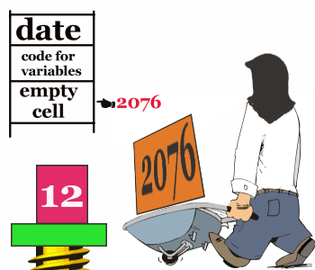
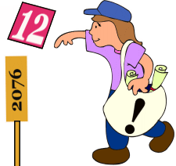
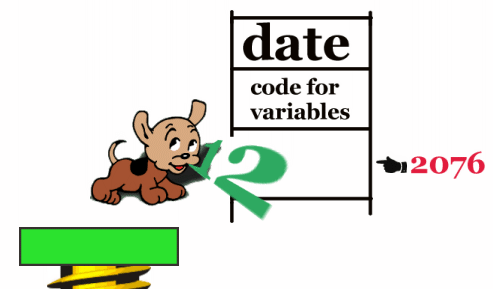
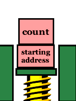

As we have seen throughout the previous seven chapters, Forth programmers use the stack to store numbers temporarily while they perform calculations or to pass arguments from one word to another. When programmers need to store numbers more permanently, they use variables and constants.
In this chapter, we'll learn how Forth treats variables and constants, and in the process we'll see how to directly access locations in memory.
Let's start with an example of a situation in which you'd want to use a variable--to store the day's date. First we'll create a variable called DATE. We do this by saying
VARIABLE DATE
If today is the twelfth, we now say
12 DATE !that is, we put twelve on the stack, then give the name of the variable, then finally execute the word !, which is pronounced store. This phrase stores the number twelve into the variable DATE.
Conversely, we can say
DATE @that is, we can name the variable, then execute the word @, which is pronounced fetch. This phrase fetches the twelve and puts it on the stack. Thus the phrase
DATE @ . 12 okprints the date.
To make matters even easier, there is a Forth word whose definition is this:
: ? @ . ;
So instead of "DATE-fetch-dot," we can simply type
DATE ? 12 ok
The value of DATE will be twelve until we change it. To change it, we simply store a new number
13 DATE ! ok DATE ? 13 ok
Conceivably we could define additional variables for the month and year:
VARIABLE DATE VARIABLE MONTH VARIABLE YEARthen define a word called !DATE (for "store-the-date") like this:
: !DATE YEAR ! DATE ! MONTH ! ;to be used like this:
7 31 03 !DATE okthen define a word called .DATE (for "print-the-date") like this:
: .DATE MONTH ? DATE ? YEAR ? ;
Your Forth system already has a number of variables defined; one is called BASE. BASE contains the number base that you're currently working in. In fact, the definition of HEX and DECIMAL (and OCTAL, if your system has it) are simply
: DECIMAL 10 BASE ! ; : HEX 16 BASE ! ; : OCTAL 8 BASE ! ;
You can work in any number base by simply storing it into BASE.
For Experts
A three-letter code such as an airport terminal name, can be stored as a single-length unsigned number in base 36. For example:: ALPHA 36 BASE ! ; ok ALPHA ok ZAP U. ZAP ok
Somewhere in the definitions of the system words which perform input and output number conversions, you will find the phrase
BASE @because the current value of BASE is used in the conversion process. Thus a single routine can convert numbers in any base. This leads us to make a formal statement about the use of variables:
| In Forth, variables are appropriate for any value that is used inside a definition which may need to change at any time after the definition has already been compiled. |
When you create a variable such as DATE by using the phrase
VARIABLE DATEyou are really compiling a new word, called DATE, into the dictionary. A simplified view would look like the view below.
| |||||
|
DATE is like any other word in your dictionary except that you defined it with the word VARIABLE instead of the word :. As a result, you didn't have to define what your definition would do, the word VARIABLE itself spells out what is supposed to happen. And here is what happens:
When you say
12 DATE !Twelve goes onto the stack, after which the text interpreter looks up DATE in the dictionary and, finding it, points it out to EXECUTE.
 EXECUTE executes a variable by copying the address of the variable's "empty" cell (where the value will go) onto the stack.
 The word ! takes the address (on top) and the value (underneath), and stores the value into that location. Whatever number used to be at that address is replaced by the new number.
(To remember what order the arguments belong in, think of setting down your parcel, then sticking the address label on top.)
 The word @ expects one argument only: an address, which in this case is supplied by the name of the variable, as in
DATE @
Using the value on the stack as an address, the word @ pushes the contents of that location onto the stack, "dropping" the address. (The contents of the location remain intact.)
In Forth, a variable is ideal for keeping a count of something. To reuse our egg-packer example, we might keep track of how many eggs go down the conveyor belt in a single day. (This example will work at your terminal, so enter it as we go.)
First we can define
VARIABLE EGGSto keep the count in. To start with a clean slate every morning, we could store a zero into EGGS by executing a word whose definition looks like this:
: RESET 0 EGGS ! ;
Then somewhere in our egg-packing application, we would define a word which executes the following phrase every time an egg passes an electric eye on the conveyor:
1 EGGS +!The word +! adds the given value to the contents of the given address. (It doesn't bother to tell you what the contents are.) Thus the phrase
1 EGGS +!increments the count of eggs by one. For purposes of illustration, let's put this phrase inside a definition like this:
: EGG 1 EGGS +! ;
At the end of the day, we would say
EGGS ?to find out how many eggs went by since morning.
Let's try it:
RESET ok EGG ok EGG ok EGG ok EGGS ? 3 ok
Here's a review of the words we've covered in the chapter so far:
| VARIABLE xxx | ( -- ) xxx: ( -- addr ) | Creates a variable named xxx; the word xxx returns its address when executed. | |
| ! | ( n addr -- ) | Stores a single-length number into the address. | |
| @ | ( addr -- n ) | Replaces the address with its contents. | |
| ? | ( addr -- ) | Prints the contents of the address, followed by one space. | |
| +! | ( n addr -- ) | Adds a single-length number to the contents of the address. |
| ||||||
|
While variables are normally used for values that may change, constants are used for values that won't change. In Forth, we create a constant and set its value at the same time, like this:
220 CONSTANT LIMIT
Here we have defined a constant named LIMIT, and given it the value 220. Now we can use the word LIMIT in place of the value, like this:
: ?TOO-HOT LIMIT > IF ." Danger -- reduce heat " THEN ;
If the number on the stack is greater than 220, then the warning message will be printed.
Notice that when we say
LIMITwe get the value, not the address. We don't need the "fetch."
This is an important difference between variables and constants. The reason for the difference is that with variables, we need the address to have the option of fetching or storing. With constants we always want the value; we absolutely never store. (If you really need to store a new value into a "constant", you should use a VALUE.)
One use for constants is to name a hardware address. For example, a microprocessor-controlled portable camera application might contain this definition:
: PHOTOGRAPH SHUTTER OPEN TIME EXPOSE SHUTTER CLOSE ;
Here the word SHUTTER has been defined as a constant so that execution of SHUTTER returns the hardware address of the camera's shutter. It might, for example, be defined:
HEX FFFF3E27 CONSTANT SHUTTER DECIMAL
The words OPEN and CLOSE might be defined simply as
: OPEN 1 SWAP ! ; : CLOSE 0 SWAP ! ;
so that the phrase
SHUTTER OPENwrites a "1" to the shutter address, causing the shutter to open.
Here are some situations when it's good to define numbers as constants:
| CONSTANT xxx | ( n -- ) xxx: ( -- n ) | Creates a constant named xxx with the value n; the word xxx returns n when executed. |
You can define a double-length variable by using the word 2VARIABLE. For example,
2VARIABLE DATE
Now you can use the Forth words 2! (pronounced two-store) and 2@ (pronounced two-fetch) to access this double-length variable. You can store a double-length number into it by simply saying
800,000 DATE 2!and fetch it back with
DATE 2@ D. 800000 ok
Or you can store the full month/date/year into it, like this:
7/17/03 DATE 2!and fetch it back with
DATE 2@ .DATE 7/17/03 okassuming that you've loaded the version of .DATE we gave in the last chapter.
You can define a double-length constant by using the Forth word 2CONSTANT, like this:
200,000 2CONSTANT APPLES
Now the word APPLES will place the double-length number on the stack.
APPLES D. 200000 ok
Of course, we can do:
400,000 2CONSTANT MUCH : MUCH-MORE 200,000 D+ MUCH D+ ;in order to be able to say
APPLES MUCH-MORE D. 800000 ok
As the prefix "2" reminds us, we can also use 2CONSTANT to define a pair of single-length numbers. The reason for putting two numbers under the same name is a matter of convenience and of saving space in the dictionary.
As an example, recall (from Chap. 5) that we can use the phrase
355 113 */to multiply a number by a crude approximation of p. We could store these two integers as a 2CONSTANT as follows:
355 113 2CONSTANT PIthen simply use the phrase
PI */as in
10000 PI */ . 31415 ok
Here is a review of the double-length data-structure words:
| 2CONSTANT xxx | ( d -- ) xxx: ( -- d ) | Creates a double-length constant named xxx with the value d; the word xxx returns d when executed. | |
| 2VARIABLE xxx | ( -- ) xxx: ( -- addr ) | Creates a double-length variable named xxx; the word xxx returns its address when executed. | |
| 2! | ( d addr -- ) | Stores a double-length number into the address. | |
| 2@ | ( addr -- d ) | Returns the double-length contents of the address. |
| |||||
|
As you know, the phrase
VARIABLE DATEcreates a definition which conceptually looks like that at the right.
Now if you say
1 CELLS ALLOTan additional cell is allotted in the definition, like this:
| |||||
|
The result is the same as if you had used 2VARIABLE. By changing the argument to ALLOT, however, you can define any number of variables under the same name. Such a group of variables is called an "array."
For example, let's say that in our laboratory, we have not just one, but five burners that heat various kinds of liquids.
We can make our word ?TOO-HOT check that all five burners have not exceeded their individual limit if we define LIMIT using an array rather than a constant.
Let's give the array the name LIMITS, like this:
VARIABLE LIMITS 4 CELLS ALLOT
The phrase "4 CELLS ALLOT" gives the array an extra four cells (five cells in all).
| |||||||||||||
|
|
Suppose we want the limit for burner 0 to be 220. We can store this value by simply saying
220 LIMITS !because LIMITS returns the address of the first cell in the array. Suppose we want the limit for burner 1 to be 340. We can store this value by adding 1 CELLS to the address of the original cell, like this:
340 LIMITS 1 CELLS + !
We can store limits for burners 2, 3, and 4 by adding the "offsets" 2 CELLS, 3 CELLS, and 4 CELLS, respectively, to the original address. We can define the convenient word
: LIMIT ( burner# -- addr ) CELLS LIMITS + ;to take a burner number on the stack and compute an address that reflects the appropriate offset.
Now if we want the value 170 to be the limit for burner 2, we simply say
170 2 LIMIT !or similarly, we can fetch the limit for burner 2 with the phrase
2 LIMIT ? 170 ok
This technique increases the usefulness of the word LIMIT, so that we can redefine ?TOO-HOT as follows:
: ?TOO-HOT ( temp burner# -- ) LIMIT @ > IF ." Danger -- reduce heat " THEN ;which works like this:
210 0 ?TOO-HOT ok 230 0 ?TOO-HOT Danger -- reduce heat ok 300 1 ?TOO-HOT ok 350 1 ?TOO-HOT Danger -- reduce heat oketc.
Meanwhile, back at the egg ranch:
Here's another example of an array. In this example, each element of the array is used as a separate counter. Thus we can keep track of how many cartons of "extra large" eggs the machine has packed, how many "large," and so forth.
Recall from our previous definition of EGGSIZE (in Chap. 4) that we used four categories of acceptable eggs, plus two categories of "bad eggs."
0 CONSTANT REJECT 1 CONSTANT SMALL 2 CONSTANT MEDIUM 3 CONSTANT LARGE 4 CONSTANT EXTRA-LARGE 5 CONSTANT ERROR
So let's create an array that is six cells long:
VARIABLE COUNTS 5 CELLS ALLOT
The counts will be incremented using the word +!, so we must be able to set all the elements of the array to zero before we begin counting. The phrase
COUNTS 6 CELLS 0 FILLwill fill 6 cells , starting at the address of COUNTS, with zeros. If your Forth system includes the word ERASE, it's better to use it in this situation. ERASE fills the given number of bytes with zeroes. Use it like this:
COUNTS 6 CELLS ERASE
| FILL | ( addr n b -- ) | Fills n bytes of memory, beginning at the address, with value b. |
| ERASE | ( addr n -- ) | Stores zeroes into n bytes of memory, beginning at the address. |
For convenience, we can put the phrase inside a definition, like this:
: RESET COUNTS 6 CELLS ERASE ;
Now let's define a word which will give us the address of one of the counters, depending on the category number it is given (0 through 5), like this:
: COUNTER CELLS COUNTS + ;and another word which will add one to the counter whose number is given, like this:
: TALLY COUNTER 1 SWAP +! ;
The "1" serves as the increment for +!, and SWAP puts the arguments for +! in the order they belong, i.e., ( n addr -- ).
Now, for instance, the phrase
LARGE TALLYwill increment the counter that corresponds to large eggs.
Now let's define a word which converts the weight per dozen into a category number:
: CATEGORY ( weight -- category ) DUP 18 < IF REJECT ELSE DUP 21 < IF SMALL ELSE DUP 24 < IF MEDIUM ELSE DUP 27 < IF LARGE ELSE DUP 30 < IF EXTRA-LARGE ELSE ERROR THEN THEN THEN THEN THEN NIP ;
(By the time we'll get to the NIP, we will have two values on the stack: the weight which we have been DUPping and the category number, which will be on top. We want only the category number; "NIP" eliminates the weight.)
For instance, the phrase
25 CATEGORYwill leave the number 3 (LARGE) on the stack. The above definition of CATEGORY resembles our old definition of EGGSIZE, but, in the true Forth style of keeping words as short as possible, we have removed the output messages from the definition. Instead, we'll define an additional word which expects a category number and prints an output message, like this:
: LABEL ( category -- ) CASE REJECT OF ." reject " ENDOF SMALL OF ." small " ENDOF MEDIUM OF ." medium " ENDOF LARGE OF ." large " ENDOF EXTRA-LARGE OF ." extra large " ENDOF ERROR OF ." error " ENDOF ENDCASE ;
For example:
SMALL LABEL small ok
Now we can define EGGSIZE using three of our own words:
: EGGSIZE CATEGORY DUP LABEL TALLY ;
Thus the phrase
23 EGGSIZEwill print
medium okat your terminal and update the counter for medium eggs.
How will we read the counters at the end of the day? We could check each cell in the array separately with a phrase such as
LARGE COUNTER ?(which would tell us how many "large" cartons were packed). But let's get a little fancier and define our own word to print a table of the day's results in this format:
QUANTITY SIZE 1 reject 112 small 132 medium 143 large 159 extra large 0 error
Since we have already devised category numbers, we can simply use a DO and index on the category number, like this:
: REPORT ( -- ) PAGE ." QUANTITY SIZE" CR CR 6 0 DO I COUNTER @ 5 U.R 7 SPACES I LABEL CR LOOP ;
(The phrase "I COUNTER @ 5 U.R" takes the category number given by I, indexes into the array, and prints the contents of the proper element in a five-column field.)
This is a good time to talk about factoring as it applies to Forth definitions. We've just seen an example in which factoring simplified our problem.
Our first definition of EGGSIZE from Chap. 4, categorized eggs by weight and printed the name of the categories at the terminal. In our present version we factored out the "categorizing" and the "printing" into two separate words. We can use the word CATEGORY to provide the argument either for the printing word or the counter-tallying word (or both). And we can use the printing word, LABEL, in both EGGSIZE and REPORT.
As Charles Moore, the inventor of Forth, has written:
A good Forth vocabulary contains a large number of small words. It is not enough to break a problem into small pieces. The object is to isolate words that can be reused.
For example, in the recipe:
Get a can of tomato sauce.
Open can of tomato sauce.
Pour tomato sauce into pan.
Get can of mushrooms.
Open can of mushrooms.
Pour mushrooms into pan.
you can "factor out" the getting, opening, and pouring, since they are common to both cans. Then you can give the factored-out process a name and simply write:
TOMATOES ADD MUSHROOMS ADDand any chef who's graduated from the Postfix School of Cookery will know exactly what you mean.
Not only does factoring make a program easier to write (and fix!), it saves memory space, too. A reusable word such as ADD gets defined only once. The more complicated the application, the greater the savings.
Here is another thought about Forth style before we leave the egg ranch. Recall our definition of EGGSIZE
: EGGSIZE CATEGORY DUP LABEL TALLY ;
CATEGORY gave us a value which we wanted to pas on to both LABEL and TALLY, so we included the DUP. To make the definition "cleaner," we might have been tempted to take the DUP out and put it inside the definition of LABEL, at the beginning. Thus we might have written:
: EGGSIZE CATEGORY LABEL TALLY ;
where CATEGORY passes the value to LABEL, and LABEL passes it on to TALLY. Certainly this approach would have worked. But then, when we defined REPORT, we would have had to say
I LABEL DROPinstead of simply
I LABEL
Forth programmers tend to follow this convention: when possible, words should destroy their own parameters. In general, it's better to put the DUP inside the "calling definition" (EGGSIZE, here) than in the "called" definition (LABEL, here).
We'd like to introduce a little technique that is relevant to arrays. We can best illustrate this technique by writing our own definition of a Forth word called DUMP. DUMP is used to print out the contents of a series of memory addresses. The usage is
addr count DUMP
For instance, we could enter
COUNTS 6 DUMPto print the contents of our egg-counting array called COUNTS. Since DUMP is primarily designed as a programming tool to print out the contents of memory locations, it prints either byte-by-byte or cell-by-cell, depending on the type of addressing our computer uses. Our version of DUMP will print cell-by-cell.
Obviously DUMP will involve a DO loop. The question is: what should we use for an index? Although we might use the count itself (0 - 6) as the loop index, it's better to use the address as the index.
The address of COUNTS will be the starting index for the loop, while the address plus the count will serve as the limit, like this:
: DUMP ( addr cell-count -- ) CELLS OVER + SWAP DO CR I @ 5 U.R 1 CELLS +LOOP ;
The key phrase here is
CELLS OVER + SWAPwhich immediately precedes the DO. 
The ending and starting addresses are now on the stack, ready to serve as the limit and index for the DO loop. Since we are "indexing on the addresses," once we are inside the loop we merely have to say
I @ 5 U.Rto print the contents of each element of the array. Since we are examining cells (@ fetches a single-length, single cell value), we increment the index by one cell each time, by using
1 CELLS +LOOP
Forth lets you create an array in which each element consists of a single byte rather than a full cell. This is useful any time you are storing a series of numbers whose range fits into that which can be expressed within eight bits.
The range of an unsigned 8-bit number is 0 to 255. Byte arrays are also used to store ASCII character strings. The benefit of using a byte array instead of a cell array is that you can get the same amount of data in 25% (32-bit Forth) of the memory space.
The mechanics of using a byte array are the same as using a cell array except that
| C! | ( b addr -- ) | Stores an 8-bit value into the address. | |
| C@ | ( addr -- b ) | Fetches an 8-bit value from the address. |
Many situations call for an array whose values never change during the operation of the application and which may as well be stored into the array at the same time that the array is created, just as CONSTANTs are. Forth provides the means to accomplish this through the two words CREATE and , (pronounced create and comma).
Suppose we want permanent values in our LIMITS array. Instead of saying
VARIABLE LIMITS 4 CELLS ALLOTwe can say
CREATE LIMITS 220 , 340 , 170 , 100 , 190 ,
Usually the above line would be included from a disk file, but it also works interactively.
Like the word VARIABLE, CREATE puts a new name in the dictionary at compile time and returns the address of that definition when it is executed. But it does not "allot" any bytes for a value.
The word , takes a number off the stack and stores it into the array. So each time you express a number and follow it with ,, you add one cell to the array.
For Newcomers
Ingrained habits, learned from English writing, lead some newcomers to forget to type the final , in the line. Remember that , does not separate the numbers, it compiles them.
You can access the elements in a CREATE array just as you would the elements in a VARIABLE array. For example:
LIMITS CELL+ @ . 340 ok
You can even store new values into the array, just as you would into a VARIABLE array.
To initialize a byte-array that has been defined with CREATE, you can use the word C, (c-comma). For instance, we could store each of the values used in our egg-sorting definition CATEGORY as follows:
CREATE SIZES 18 C, 21 C, 24 C, 27 C, 30 C, 255 C,
This would allow us to redefine CATEGORY using a DO loop rather than as a series of nested IF...THEN statements, as follows
: CATEGORY 6 0 DO DUP SIZES I + C@ < IF DROP I LEAVE THEN LOOP ;
Note that we have added a maximum (255) to the array to simplify our definition regarding category 5.
Including the initialization of the SIZES array, this version takes only three lines of
source text as opposed to six and takes less space in the dictionary, too.
For People Who Don't Like Guessing How It Works
The idea here is this: since there are five possible categories, we can use the category numbers as our
loop index. Each time around, we compare the number on the stack against the element in SIZES,
offset by the current loop index. As soon as the weight on the stack is greater than one of the elements
in the array, we leave the loop and use I to tell us how many times we had
looped before we "left." Since this number is our offset into the array, it will also be our category
number.
Here's a list of the Forth words we've covered in this chapter:
| CONSTANT xxx | ( n -- ) xxx: ( -- n ) | Creates a constant named xxx with the value n; the word xxx returns n when executed. |
| VARIABLE xxx | ( -- ) xxx: ( -- addr ) | Creates a variable named xxx; the word xxx returns its address when executed. |
| CREATE xxx | ( -- ) xxx: ( -- addr ) | Creates a dictionary entry (head and code pointer only) named xxx; the word xxx returns its address when executed. |
| ! | ( n addr -- ) | Stores a single-length number into the address. |
| @ | ( addr -- n ) | Replaces the address with its contents. |
| ? | ( addr -- ) | Prints the contents of the address, followed by one space. |
| +! | ( n addr -- ) | Adds a single-length number to the contents of the address. |
| ALLOT | ( n -- ) | Adds n bytes to the body of the most recently defined word. |
| , | ( n -- ) | Compiles n into the next available cell in the dictionary. |
| C! | ( b addr -- ) | Stores an 8-bit value into the address. |
| C@ | ( addr -- b ) | Fetches an 8-bit value from the address. |
| FILL | ( addr n b -- ) | Fills n bytes of memory, beginning at the address, with value b. |
| BASE | ( n -- ) | A variable which contains the value of the number base being used by the system. |
| 2CONSTANT xxx | ( d -- ) xxx: ( -- d ) | Creates a double-length constant named xxx with the value d; the word xxx returns d when executed. |
| 2VARIABLE xxx | ( -- ) xxx: ( -- addr ) | Creates a double-length variable named xxx; the word xxx returns its address when executed. |
| 2! | ( d addr -- ) | Stores a double-length number into the address. |
| 2@ | ( addr -- d ) | Returns the double-length contents of the address. |
| C, | ( b -- ) | Compiles b into the next available byte in the dictionary. |
| DUMP | ( addr u -- ) | Displays u bytes of memory, starting at the address. |
| ERASE | ( addr n -- ) | Stores zeroes into n bytes of memory, beginning at the address. |
| n, n1, ... | single-length signed |
| d, d1, ... | double-length signed |
| u, u1, ... | single-length unsigned |
| ud, ud1, ... | double-length unsigned |
| addr | address |
| c | ASCII character value |
| b | 8-bit byte |
| f | Boolean flag |
| | |
|---|---|
| Array | a series of memory locations with a single name. Values can be stored and fetched into the individual locations by giving the name of the array and adding an offset to the address. |
| Constant | a value which has a name. The value is stored in memory and usually never changes. |
| Factoring | as it applies to programming in Forth, simplifying a large job by extracting those elements which might be reused and defining those elements as operations. |
| Fetch | to retrieve a value from a given memory location. |
| Initialize | to give a variable (or array) its initial value(s) before the rest of the program begins. |
| Offset | a number which can be added to the address of the beginning of an array to produce the address of the desired location within the array. |
| Store | to place a value in a given memory location. |
| Variable | a location in memory which has a name and in which values are frequently stored and fetched. |
| | |

EAT-PIE What pie? BAKE-PIE ok EAT-PIE Thank you! ok
BAKE-PIE BAKE-PIE FREEZE-PIES ok PIES ? 0 ok FROZEN-PIES ? 2 ok
DECIMAL .BASE 10 ok HEX .BASE 16 ok[answer]
200,000 M. 20000.0 okthat is, with the decimal point one place from the right. A zero in PLACES should produce no decimal point at all. [answer]
RED PENCILSreturns the address of the cell that contains the count of red pencils, etc. Then set these variables to indicate the following counts:
23 red pencils 15 blue pencils 12 green pencils 0 orange pencils[answer]
For example, if the array has four cells and contains the values 1, 2, 3 and 4, then PLOT would produce:
1 * 2 ** 3 *** 4 ****[answer]
4 X!puts an "X" in box 4 (counting starts with 1) and produces this display:
| | --------- X | | --------- | |Then the phrase
3 O!puts an "O" in box 3 and prints the display:
| | O --------- X | | --------- | |Use a byte array to remember the contents of the board, with the value 1 to signify "X," a -1 to signify a "O," and a 0 to signify an empty box. [answer]